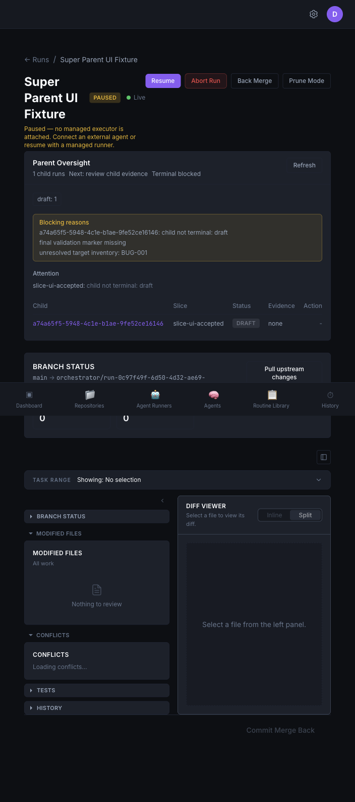
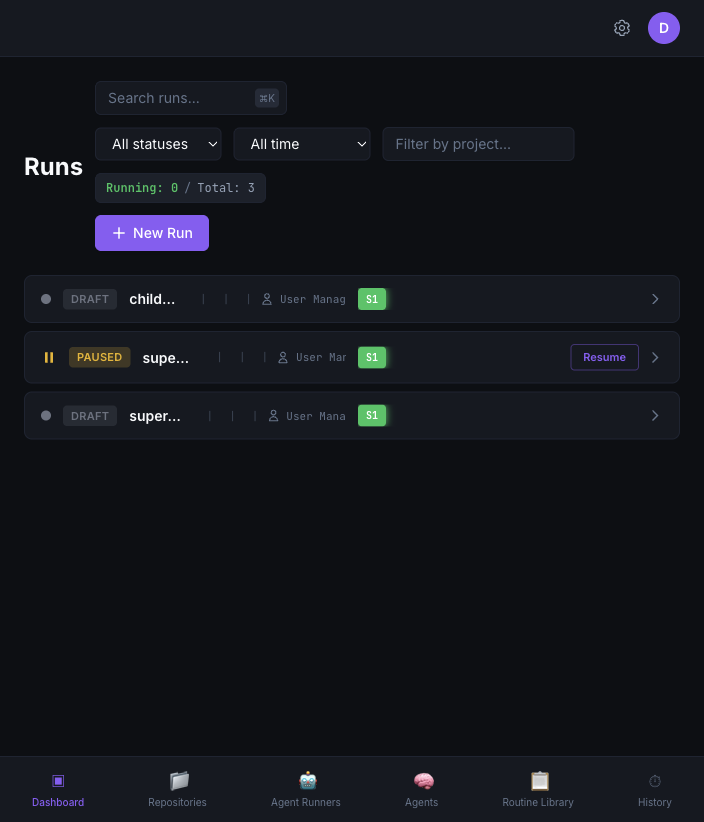
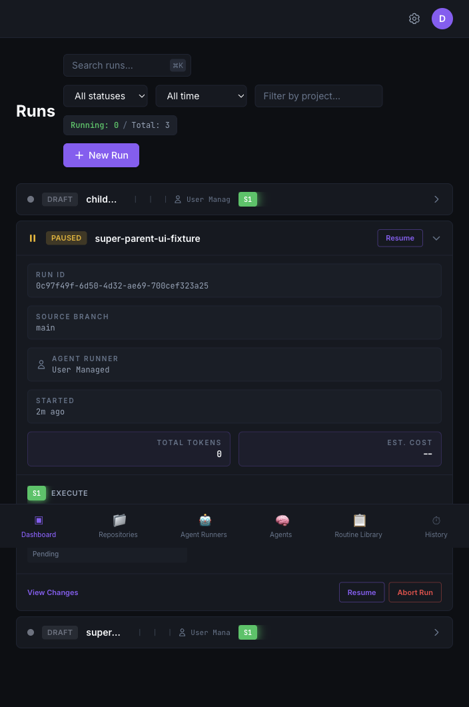
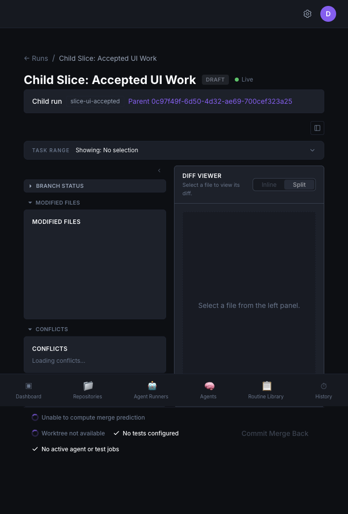

Super Parent UI Review
Screenshots, model coverage, JTBD, and iteration gaps for the implemented Super Parent flow.


Super Parent UI Review


Super Parent UI Review
Super Parent UI Review
| Area | Available fields |
|---|---|
| Mission | current_understanding, decisions, next_parent_action |
| Scope | target_inventory, slices, final_validation |
| Children | child_summaries, child_counts, active_child_run_ids |
| Attention | attention_items, stalled_slices, illegal_state_reasons |
| Completion | terminal_guard, merge_queue, accepted/rejected/abandoned children |
Super Parent UI Review
Super Parent UI Review
Super Parent UI Review
The goal is to make the parent workflow visible as a product flow, while preserving normal run review where it already works.
Super Parent UI Review
docs/super-parent/ui-review contains screenshots, model mapping, JTBD notes, gap analysis, and this deck.